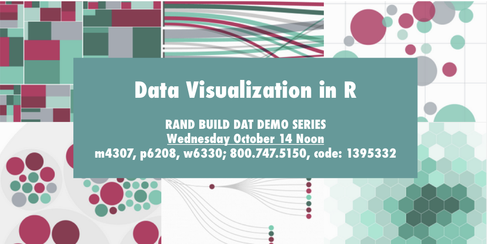
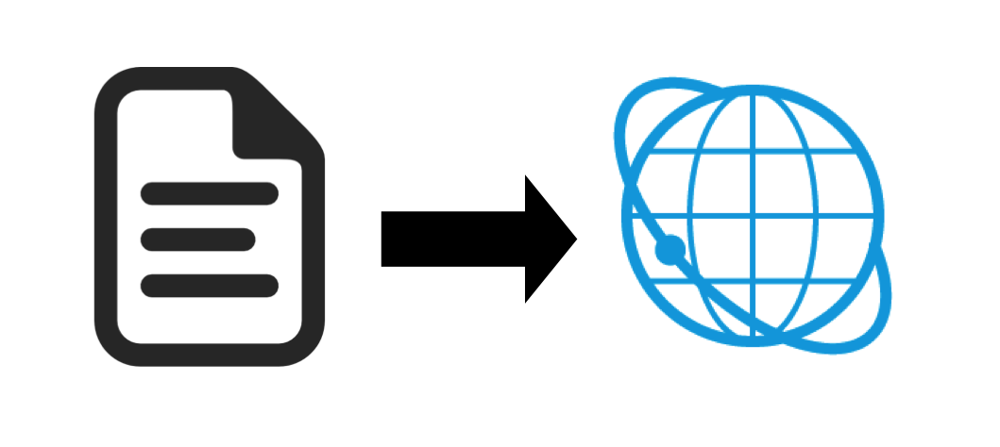
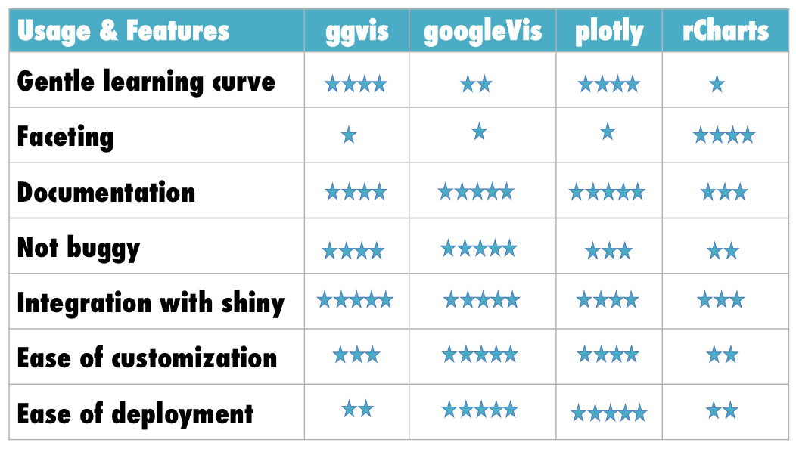
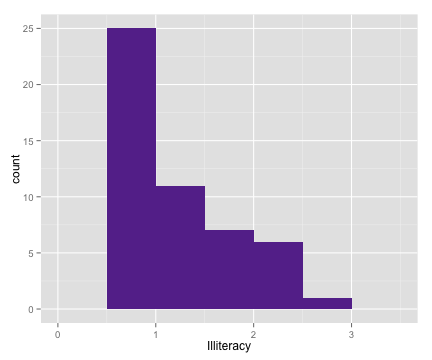
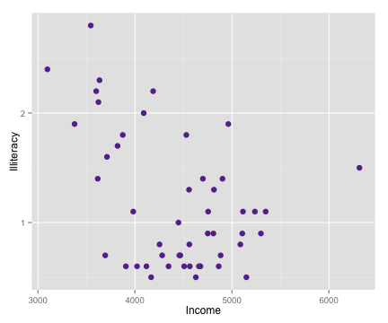

Data visualizations are interactive graphics designed for the Web.

Majority of R tools for data viz are basically a set of functions to write javascript (js) output
Chances are, if you are looking at an interactive graphic on the Web, it's written in js using a library like d3
But...what if you don't know js? or you have to do a lot of analysis to produce the output for your chart?
ggvis
googleVis
plotly
rCharts
htmlwidgets

It is easiest to understand the differences between the visualization tools by seeing them in action
In what follows, I'll use R's built-in dataset state.x77 to conduct several charting exercises
data(state)
state.x77 <- as.data.frame(state.x77)
str(state.x77)
## 'data.frame': 50 obs. of 8 variables:
## $ Population: num 3615 365 2212 2110 21198 ...
## $ Income : num 3624 6315 4530 3378 5114 ...
## $ Illiteracy: num 2.1 1.5 1.8 1.9 1.1 0.7 1.1 0.9 1.3 2 ...
## $ Life Exp : num 69 69.3 70.5 70.7 71.7 ...
## $ Murder : num 15.1 11.3 7.8 10.1 10.3 6.8 3.1 6.2 10.7 13.9 ...
## $ HS Grad : num 41.3 66.7 58.1 39.9 62.6 63.9 56 54.6 52.6 40.6 ...
## $ Frost : num 20 152 15 65 20 166 139 103 11 60 ...
## $ Area : num 50708 566432 113417 51945 156361 ...
# Static plot
library(ggplot2)
ggplot(state.x77, aes(x = Illiteracy)) +
geom_histogram(binwidth = 0.5, fill = "#663399")

[link]
# Static plot
ggplot(state.x77, aes(y = Illiteracy, x = Income)) +
geom_point(size = 3, col = "#663399")

In addition to package documentation...